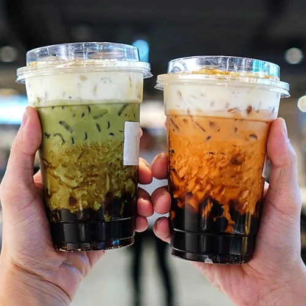

Aanya Agrawal
future academic weapon (hopefully)
Hobbies
 One of my favorite things to do in my free time is reading. I enjoy genres such as literary fiction, historical fiction, and thrillers, and right now, I’m reading a literary fiction novel called The Goldfinch by Donna Tart. Recently, I’ve been learning to play the guitar, which has been challenging but also really fun. The hardest part is training my fingers to press the strings properly, but once I develop calluses, I think it’ll be even more enjoyable to figure out a new part of a song or chord. I also love listening to music — my favorite genre is indie pop, although I enjoy exploring other genres too — and I almost always have an AirPod in, since music helps me focus. When I’m not reading, playing guitar, or studying, I spend time with my friends. Altogether, my hobbies help me relax, destress from school, and enjoy my free time.
One of my favorite things to do in my free time is reading. I enjoy genres such as literary fiction, historical fiction, and thrillers, and right now, I’m reading a literary fiction novel called The Goldfinch by Donna Tart. Recently, I’ve been learning to play the guitar, which has been challenging but also really fun. The hardest part is training my fingers to press the strings properly, but once I develop calluses, I think it’ll be even more enjoyable to figure out a new part of a song or chord. I also love listening to music — my favorite genre is indie pop, although I enjoy exploring other genres too — and I almost always have an AirPod in, since music helps me focus. When I’m not reading, playing guitar, or studying, I spend time with my friends. Altogether, my hobbies help me relax, destress from school, and enjoy my free time.
My Future
 I was young, I’ve always wanted to become a doctor, because I’ve been fascinated by the human body and how it works. I love the idea of doing something I’m interested in while also interacting with others, rather than living a solitary life. I plan to take courses such as AP Biology, AP Chemistry, and Organic Chemistry so I’ll be ready for medical school. My dream school is UCLA and I’m working towards joining their pre-med program. I know it will be difficult to reach that goal, but I’m determined to put in the work and make my dream a reality.
I was young, I’ve always wanted to become a doctor, because I’ve been fascinated by the human body and how it works. I love the idea of doing something I’m interested in while also interacting with others, rather than living a solitary life. I plan to take courses such as AP Biology, AP Chemistry, and Organic Chemistry so I’ll be ready for medical school. My dream school is UCLA and I’m working towards joining their pre-med program. I know it will be difficult to reach that goal, but I’m determined to put in the work and make my dream a reality.
People around me
 The people around me are really important in my life. My parents are always there to support me, no matter what I’m doing, and I can always count on them to listen and give me advice. My brother, even though he’s young, always knows how to cheer me up after a bad day and makes me laugh when I need it most. I especially enjoy spending time with my friends — they’re all super kind and funny, and I always end up happier after spending time with them. I love getting food with them (we often get boba or fries), showing up at their houses randomly, or having sleepovers. Being around my family and friends always reminds me how lucky I am to have such an amazing support system, and I’m so grateful for them.